Листовые материалы
Декоративные панели SIBU
- Применение и преимущества декоративных панелей
-
В отделке интерьеров и мебели в последнее время все чаще используются панели декоративного пластика. Они представляют собой прессованные плиты из полистирола, при этом толщина изделий может варьироваться от одного до четырех миллиметров. Такая вариативность позволяет подбирать панели, оптимально соответствующий требованиям в каждом конкретном случае. Декоративный пластик продается в виде панелей стандартных размеров.
Применение декоративных панелей
Одним из ведущих производителей панелей является компания SIBU DESIGN (Австрия)
Панели SIBU DESIGN – пластиковые декоративные панели из полистирола. Размеры панелей 1000x2612, 1000x2000 и 980x980 мм. Панели легко режутся и гнутся, их можно использовать для декоративной финишной отделки помещений.
Пластиковые панели (декоративный пластик) SIBU крепится любым доступным способом. Большинство панелей самоклеящиеся, производятся с клеевым слоем, уже нанесенным на обратную поверхность, это упрощает их использование. Где не хватает длины листа для стыковки, используются декоративные раскладки и профили SIBU. Применение декоративного пластика обеспечивает возможность создания уникального и оригинального дизайна аксессуаров или интерьера.
Панели Sibu нашли широкое применение в мебельном производстве (для отделки изделий) и в декорировании помещений различного назначения: жилых, офисных, административных, торгово-развлекательных.
Панели пользуются популярностью у производителей мебели и дизайнеров.
Декоративный панели SIBU служит для: облицовки фасада кухонных гарнитуров: хорошие эксплуатационные характеристики, удобство работы с материалом и многообразие дизайнов позволяет создавать оригинальные и недорогие модели; Производства различных предметов мебели; Отделки гостиных, спален, прихожих, кухонь, офисных стоек и так далее; Декорирования ванных комнат и других помещений с высокой влажностью воздуха. Многочисленные преимущества декоративных пластиковых панелей позволяют использовать их без каких-либо существенных ограничений.
Преимущества декоративного пластика
Хорошие эксплуатационные характеристики. Декоративные панели SIBU из пластика имеют долгий срок службы, отличаются устойчивостью к внешним воздействиям (в том числе, не выгорают на солнце, хорошо переносят высокую влажность), легко очищаются от загрязнений и не требуют за собой специфичного ухода. Все это делает декоративные панели отделочным материалом, с которым удобно работать; Простота монтажа. Легкость и гибкость панелей гарантируют простоту монтажа. Панели «садятся» на клей или двухсторонний скотч, их можно использовать для отделки поверхностей со сложной формой, разрезая прямо в процессе установки; Широкий ассортимент цветов и фактуры; Привлекательный внешний вид.
- SIBU profiles(самоклеющиеся)
-
Winkelprofil
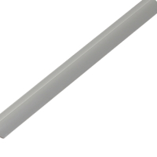Пластиковый декоративный уголок, серебристый, матовый. Подробная информация на официальном сайте www.sibu.at
Наименование Размер мм. Основа Winkelprofil (уголок) 2700х10х5 Самоклеющаяся Z224 Silver pf gloss
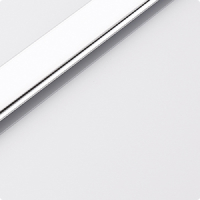Пластиковый декоративный стыковочный профиль, матовый серебристый. Подробная информация на официальном сайте www.sibu.at
Наименование Размер мм. Основа Z224 Silver pf gloss 2700 Самоклеющаяся M50 Silver PF gloss
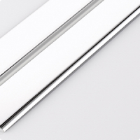Пластиковый декоративный гибкий уголок, глянцевый серебристый, минимальный радиус изгиба 150мм. Подробная информация на официальном сайте www.sibu.at
Наименование Размер мм. Основа M50 Silver PF gloss 2700х50 Не самоклеющаяся Z 239 Nero matt
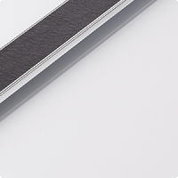Пластиковый декоративный стыковочный профиль, с вставкой из ПУ - кожи черного цвета. Подробная информация на официальном сайте www.sibu.at
Наименование Размер мм. Основа Z 239 Nero matt 2700 Самоклеющаяся M58 Silver PF met
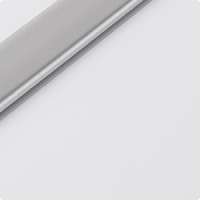Пластиковый декоративный завершающий профиль, матовый серебристый. Подробная информация на официальном сайте www.sibu.at
Наименование Размер мм. Основа M58 Silver PF met 2700 Самоклеющаяся M 242 Nero
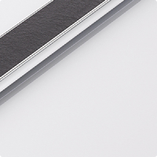Пластиковый декоративный завершающий профиль, с вставкой из ПУ - кожи черного цвета. Подробная информация на официальном сайте www.sibu.at
Наименование Размер мм. Основа M 242 Nero 2700 Самоклеющаяся M 239 Bianco matt
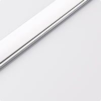Пластиковый декоративный стыковочный профиль, с вставкой из ПУ - кожи белого цвета. Подробная информация на официальном сайте www.sibu.at
Наименование Размер мм. Основа M 239 Bianco matt 2700 Самоклеющаяся M58 Silver PF gloss
Пластиковый декоративный завершающий, глянцевый серебряный. Подробная информация на официальном сайте www.sibu.at
Наименование Размер мм. Основа M58 Silver PF gloss 2700 Самоклеющаяся M 242 Bianco matt
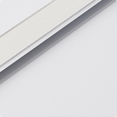Пластиковый декоративный завершающий профиль, с вставкой из ПУ - кожи белого цвета. Подробная информация на официальном сайте www.sibu.at
Наименование Размер мм. Основа M 242 Bianco matt 2700 Самоклеющаяся Z224 Silver pf met
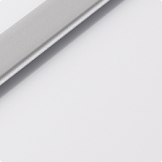Пластиковый декоративный стыковочный профиль, матовый серебристый. Подробная информация на официальном сайте www.sibu.at
Наименование Размер мм. Основа Z224 Silver pf met 2700 Самоклеющаяся M50 Silver PF met
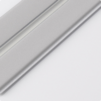Пластиковый декоративный гибкий уголок, матовый серебристый, минимальный радиус изгиба 150мм. Подробная информация на официальном сайте www.sibu.at
Наименование Размер мм. Основа M50 Silver PF met 2700х50 Не самоклеющаяся - SIBU Glass
-
SG SibuGlas YUKON AR
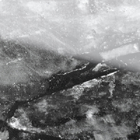Декоративный пластик SibuGlas AR+, покрытый РММА пластиком устойчивым к истиранию. Подробная информация на официальном сайте www.sibu.at
Наименование Размер мм. Основа SG SibuGlas YUKON AR+ 2600х1000х2,53 Самоклеющаяся SG SibuGlas PEARL RAY Gold AR
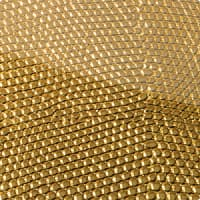Декоративный пластик SibuGlas AR+, покрытый РММА пластиком устойчивым к истиранию. Подробная информация на официальном сайте www.sibu.at
Наименование Размер мм. Основа SG SibuGlas PEARL RAY Gold AR 2600х1000х3,03 Самоклеющаяся SG SibuGlas Cocktail Saphire AR
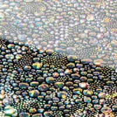Декоративный пластик SibuGlas AR+, покрытый РММА пластиком устойчивым к истиранию. Подробная информация на официальном сайте www.sibu.at
Наименование Размер мм. Основа SG SibuGlas Cocktail Saphire AR 2600х1000х3,43 Не самоклеющаяся SG Vintage copper AR
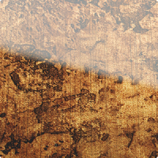Декоративный пластик SibuGlas AR+, покрытый РММА пластиком устойчивым к истиранию. Подробная информация на официальном сайте www.sibu.at
Наименование Размер мм. Основа SG Vintage copper AR 2600х1000х2,93 Самоклеющаяся SG SibuGlas Leguan silver AR
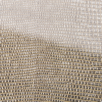Декоративный пластик SibuGlas AR+, покрытый РММА пластиком устойчивым к истиранию. Подробная информация на официальном сайте www.sibu.at
Наименование Размер мм. Основа SG SibuGlas Leguan silver AR 2600х1000х2,93 Самоклеющаяся - SIBU Leather-line(самоклеющиеся)
-
Линия Leather-Line - это приятный на ощупь, дающий ощущение уюта и тепла, материал для новых дизайнерских решений. Гениальные дизайнеры компании создали фактуры на любой вкус и цвет: с цветочным рельефным орнаментом, с имитацией кожи игуаны, крокодила и страуса, стеганая кожа в стиле Coco Chanel, - и все это в мягком кожаном исполнении. К таким панелям приятно прикасаться, за ними легко ухаживать, но главное - они способны преобразить любой интерьер, сделать его намного более уютным, стильным и необычным. Созданием линии Leather-Line фирма SIBU Design еще раз подтвердила свою репутацию экcперта в области дизайна, продемонстрировав принципиально новую коллекцию продукции: полноформатные панели с поверхностью из кожзаменителя различных цветов и фактур, с отделкой под кожу игуаны, крокодила и страуса. Элегантные и современные панели с растительным орнаментом, а также "черно-белая" коллекция полностью вписываются в современный тренд моды.
LL FLORAL White/Silver matt
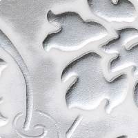Декоративный пластик с покрытием из ПУ кожи. Подробная информация на официальном сайте www.sibu.at
Наименование Размер мм. Основа LL FLORAL White/Silver matt 2612х1000х2,7 Самоклеющаяся LL Pelo Savanna
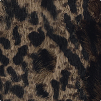Декоративный пластик с покрытием из ПУ кожи. Подробная информация на официальном сайте www.sibu.at
Наименование Размер мм. Основа LL Pelo Savanna 2612х1000х1,8 Самоклеющаяся LL Dark Brown ZN 200 / Beige
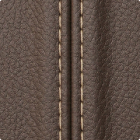Декоративный пластик покрытый ПУ кожей. Подробная информация на официальном сайте www.sibu.at
Наименование Размер мм. Основа LL Dark Brown ZN 200 / Beige 2612х1000х2,8 Самоклеющаяся LL Croco black
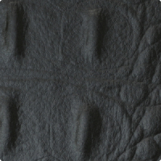Декоративный пластик покрытый ПУ-кожей. Подробная информация на официальном сайте www.sibu.at
Наименование Размер мм. Основа LL Croco black 2600х1000х1,6 Самоклеющаяся LL Leguan nero
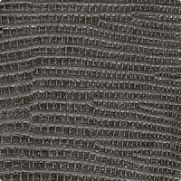Декоративный пластик с покрытием из ПУ кожи. Подробная информация на официальном сайте www.sibu.at
Наименование Размер мм. Основа LL Leguan nero 2612х1000х1.63 Самоклеющаяся LL Croco uni magenta
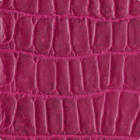Декоративный пластик покрытый ПУ кожей. Подробная информация на официальном сайте www.sibu.at
Наименование Размер мм. Основа LL Croco uni magenta 2612х1000х2,8 Самоклеющаяся LL Floral White
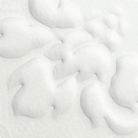Декоративный пластик покрытый ПУ кожей. Подробная информация на официальном сайте www.sibu.at
Наименование Размер мм. Основа LL Floral White 2600х1000х1,6 Самоклеющаяся LL Leguan Gold
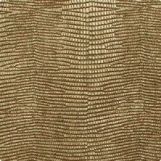Декоративный пластик покрытый ПУ кожей. Подробная информация на официальном сайте www.sibu.at
Наименование Размер мм. Основа LL Leguan Gold 2612х1000х2,8 Самоклеющаяся LL Croco creme
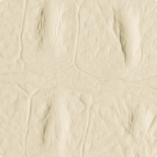Декоративный пластик покрытый ПУ кожей. Подробная информация на официальном сайте www.sibu.at
Наименование Размер мм. Основа LL Croco creme 2612х1000х2,8 Самоклеющаяся LL Floral red
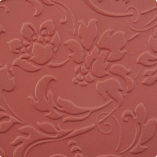Декоративный пластик покрытый ПУ кожей. Подробная информация на официальном сайте www.sibu.at
Наименование Размер мм. Основа LL Floral red 2600х1000х1,6 Самоклеющаяся LL Leguan Copper
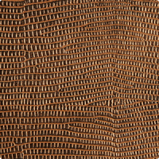Декоративный пластик покрытый ПУ кожей. Подробная информация на официальном сайте www.sibu.at
Наименование Размер мм. Основа LL Leguan Copper 2612х1000х2,8 Самоклеющаяся LL Crepa Nero
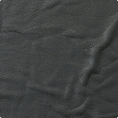Декоративный пластик покрытый ПУ кожей. Подробная информация на официальном сайте www.sibu.at
Наименование Размер мм. Основа LL Leguan Copper 2600х1000х1,6 Самоклеющаяся LL STRUZZO Dark Brown
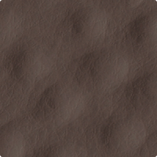Декоративный пластик покрытый ПУ кожей. Подробная информация на официальном сайте www.sibu.at
Наименование Размер мм. Основа LL STRUZZO Dark Brown 2612х1000х2,8 Самоклеющаяся LL Imperial white/silver
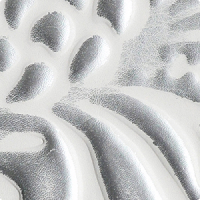Декоративный пластик покрытый ПУ кожей. Подробная информация на официальном сайте www.sibu.at
Наименование Размер мм. Основа LL Imperial white/silver 2612х1000х2,8 Самоклеющаяся LL Creme ZN 200 / Brown

Декоративный пластик покрытый ПУ кожей. Подробная информация на официальном сайте www.sibu.at
Наименование Размер мм. Основа LL Creme ZN 200 / Brown 2600х1000х1,6 Самоклеющаяся LL STRUZZO Creme
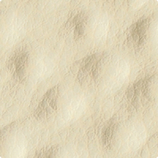Декоративный пластик покрытый ПУ кожей. Подробная информация на официальном сайте www.sibu.at
Наименование Размер мм. Основа LL STRUZZO Creme 2612х1000х2,8 Самоклеющаяся LL Floral White / Gold mat
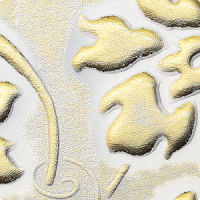Декоративный пластик покрытый ПУ кожей. Подробная информация на официальном сайте www.sibu.at
Наименование Размер мм. Основа LL Floral White / Gold mat 2612х1000х2,8 Самоклеющаяся CR Cristal Rombo 85 bianco mat/silver
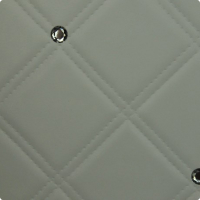Декоративный пластик покрытый ПУ кожей. Подробная информация на официальном сайте www.sibu.at
Наименование Размер мм. Основа CR Cristal Rombo 85 bianco mat/silver 2600х1000х1,6 Самоклеющаяся LL Reggae
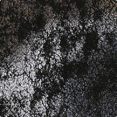Декоративный пластик покрытый ПУ кожей. Подробная информация на официальном сайте www.sibu.at
Наименование Размер мм. Основа LL Reggae 2612х1000х1,2 Самоклеющаяся LL Floral Black / Silver mat
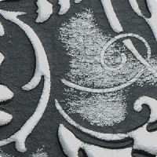Декоративный пластик покрытый ПУ кожей. Подробная информация на официальном сайте www.sibu.at
Наименование Размер мм. Основа LL Floral Black / Silver mat 2612х1000х2,8 Самоклеющаяся CR Cristal rombo 85 nero/silver
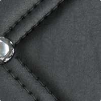Декоративный пластик покрытый ПУ кожей. Подробная информация на официальном сайте www.sibu.at
Наименование Размер мм. Основа CR Cristal rombo 85 nero/silver 2600х1000х1,6 Самоклеющаяся LL Quadro Creme
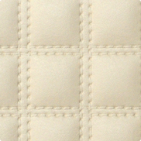Декоративный пластик покрытый ПУ кожей. Подробная информация на официальном сайте www.sibu.at
Наименование Размер мм. Основа LL Quadro Creme 2612х1000х4,5 Самоклеющаяся LL Floral Black
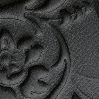Декоративный пластик покрытый ПУ кожей. Подробная информация на официальном сайте www.sibu.at
Наименование Размер мм. Основа LL Floral Black 2612х1000х2,8 Самоклеющаяся CR Cristal Collier bianco mat/silver
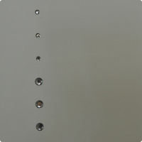Декоративный пластик покрытый ПУ кожей. Подробная информация на официальном сайте www.sibu.at
Наименование Размер мм. Основа CR Cristal Collier bianco mat/silver 2600х1000х1,6 Самоклеющаяся - SIBU Punch-line 3D(самоклеющиеся)
- SIBU Punch-line(не самоклеющиеся)
- SIBU Structure-line(самоклеющиеся)
- SIBU DECO-LINE(самоклеющиеся)
- SIBU DECO-LINE(не самоклеющиеся)
- SIBU Multistyle(самоклеющиеся)
- SIBU ACRYLIC-LINE
- Клей Sibukle 22D HV